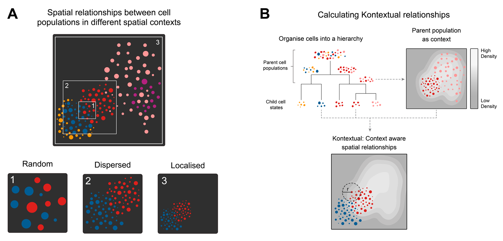
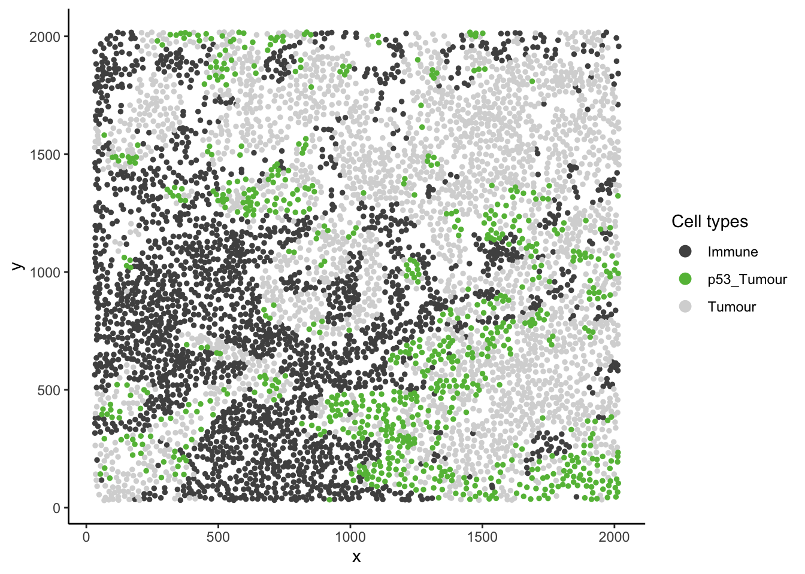
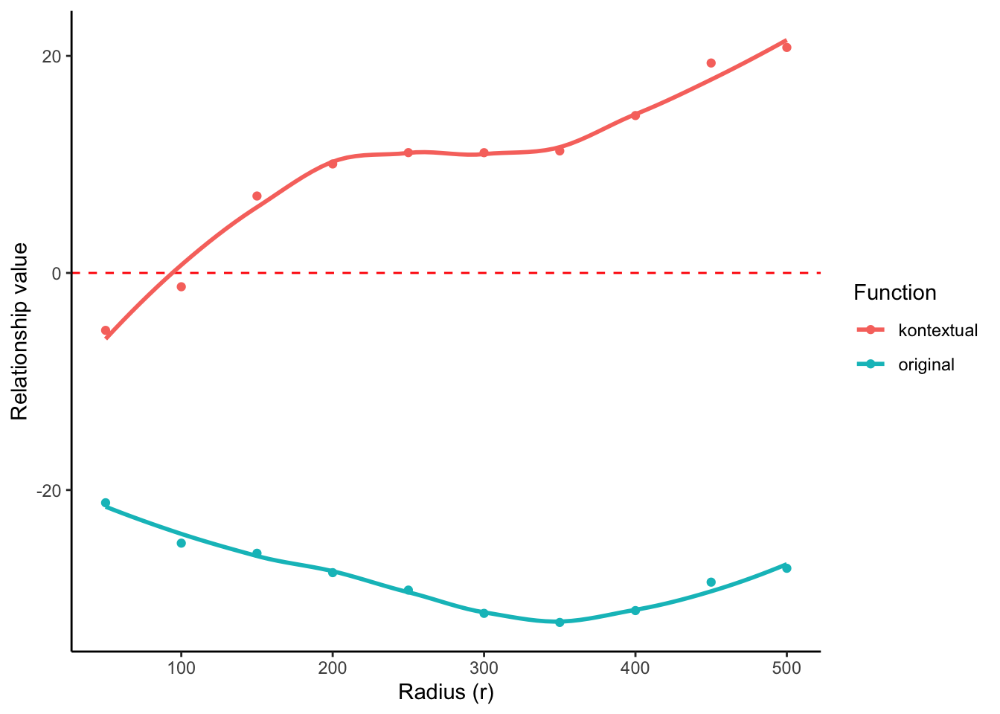
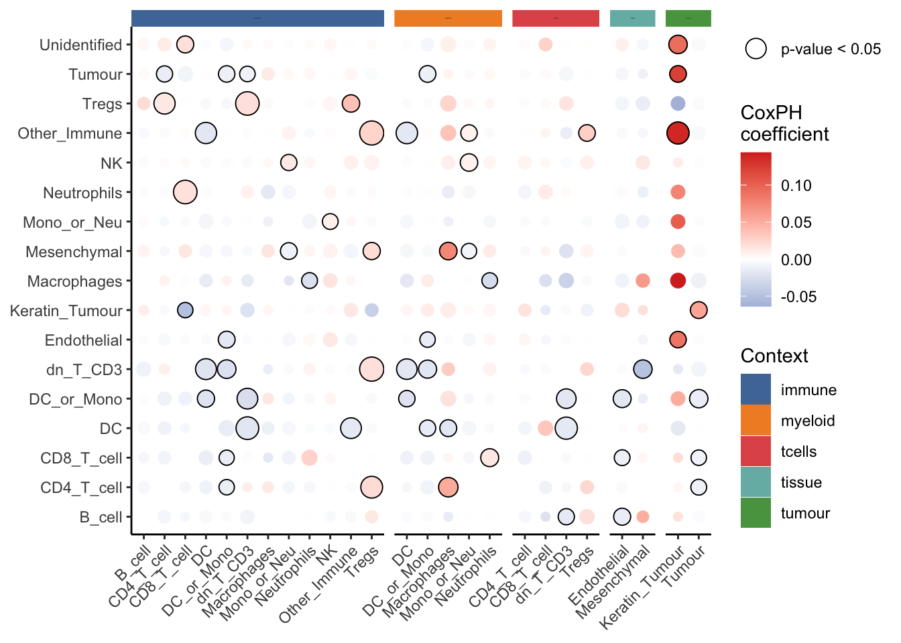

8 Cell relationships relative to expected behaviour
Understanding spatial relationships between cell types is essential for interpreting how cells function within their native tissue environments. Yet, these relationships can be influenced by confounding factors like uneven cell distributions, tissue architecture, and the specific regions imaged. The Kontextual method, available in the Statial package, tackles these challenges by integrating biological context directly into spatial analysis. Instead of assessing cell positions in isolation, Kontextual defines reference contexts—such as local neighbourhood composition or tissue compartments—and evaluates whether particular cell types are clustered or dispersed within these settings. This strategy reduces the impact of structural inhomogeneity and sampling bias, enabling more robust, biologically meaningful insights into spatial organisation.
In this section, we will demonstrate how to use Statial to extract contextualised spatial metrics and interpret localisation patterns with greater confidence.
# set parameters
set.seed(51773)
# whether to use multiple cores (recommended)
use_mc = TRUE
is_windows = .Platform$OS.type == "windows"
if (use_mc) {
nCores = max(ceiling(parallel::detectCores() / 2), 1)
if (nCores == 1) {
BPPARAM = BiocParallel::SerialParam()
} else if (is_windows) {
BPPARAM = BiocParallel::SnowParam(workers = nCores, type = "SOCK")
} else {
BPPARAM = BiocParallel::MulticoreParam(workers = nCores)
}
} else {
BPPARAM = BiocParallel::SerialParam()
}
theme_set(theme_classic())8.1 Load datasets
kerenSPE <- SpatialDatasets::spe_Keren_2018()
# remove any missing data in our outcome columns
kerenSPE = kerenSPE[, complete.cases(colData(kerenSPE)[, c("Censored", "Survival_days_capped*",
"tumour_type")])]8.2 Kontextual: Context aware cell localisation
Kontextual is a method for performing inference on cell localisation which explicitly defines the contexts in which spatial relationships between cells can be identified and interpreted. These contexts may represent landmarks, spatial domains, or groups of functionally similar cells which are consistent across regions. By modelling spatial relationships between cells relative to these contexts, Kontextual produces robust spatial quantifications that are not confounded by biases such as the choice of region to image and the tissue structure present in the images. The Kontextual function is available in the Statial package.

In this example we demonstrate how cell type hierarchies can be used as a means to derive appropriate “contexts” for the evaluation of cell localisation. We then demonstrate the types of conclusions which Kontextual enables.
8.2.1 Using cell type hierarchies to define a “context”
A cell type hierarchy may be used to define the “context” in which cell type relationships are evaluated within. A cell type hierarchy defines how cell types are functionally related to one another. The bottom of the hierarchy represents homogeneous populations of a cell type (child), and the cell populations at the nodes of the hierarchy represent broader parent populations with shared generalised function. For example, CD4 T cells may be considered a child population to the Immune parent population.
There are two ways to define the cell type hierarchy. First, they can be defined based on our biological understanding of the cell types. We can represent this by creating a named list containing the names of each parent and the associated vector of child cell types.
The all vector must be created to include cell types which do not have a parent e.g. the undefined cell type in this data set.
# Examine all cell types in image
unique(kerenSPE$cellType) [1] "Keratin_Tumour" "dn_T_CD3" "B_cell" "CD4_T_cell"
[5] "DC_or_Mono" "Unidentified" "Macrophages" "CD8_T_cell"
[9] "Other_Immune" "Endothelial" "Mono_or_Neu" "Mesenchymal"
[13] "Neutrophils" "NK" "Tumour" "DC"
[17] "Tregs" # Named list of parents and their child cell types
biologicalHierarchy = list(
"tumour" = c("Keratin_Tumour", "Tumour"),
"tcells" = c("dn_T_CD3", "CD4_T_cell", "CD8_T_cell", "Tregs"),
"myeloid" = c("DC_or_Mono", "DC", "Mono_or_Neu", "Macrophages", "Neutrophils"),
"tissue" = c("Endothelial", "Mesenchymal")
)
# Adding more broader immune parent populations
biologicalHierarchy$immune = c(biologicalHierarchy$bcells,
biologicalHierarchy$tcells,
biologicalHierarchy$myeloid,
"NK", "Other_Immune", "B_cell")
# Creating a vector for all cellTypes
all <- unique(kerenSPE$cellType)Alternatively, you can use the treeKoR package on Bioconductor to define these hierarchies in a data driven way.
These parent populations may not be accurate as we are using a small subset of the data.
# Calculate hierarchy using treekoR
kerenTree <- treekoR::getClusterTree(t(assay(kerenSPE, "intensities")),
kerenSPE$cellType,
hierarchy_method = "hopach",
hopach_K = 1)
# Convert treekoR result to a name list of parents and children.
treekorParents = getParentPhylo(kerenTree)
treekorParents$parent_1
[1] "dn_T_CD3" "B_cell" "CD4_T_cell" "DC_or_Mono" "Macrophages"
[6] "CD8_T_cell" "Other_Immune" "NK" "DC" "Tregs"
$parent_2
[1] "Unidentified" "Endothelial" "Mesenchymal"
$parent_3
[1] "Keratin_Tumour" "Mono_or_Neu" "Neutrophils" "Tumour" 8.2.2 Application on triple negative breast cancer image
Here we examine an image highlighted in the Keren 2018 manuscript where accounting for context information enabled new conclusions.
# Lets define a new cell type vector
kerenSPE$cellTypeNew <- kerenSPE$cellType
# Select for all cells that express higher than baseline level of p53
p53Pos <- assay(kerenSPE)["p53", ] > -0.300460
# Find p53+ tumour cells
kerenSPE$cellTypeNew[kerenSPE$cellType %in% biologicalHierarchy$tumour] <- "Tumour"
kerenSPE$cellTypeNew[p53Pos & kerenSPE$cellType %in% biologicalHierarchy$tumour] <- "p53_Tumour"
# Group all immune cells under the name "Immune"
kerenSPE$cellTypeNew[kerenSPE$cellType %in% biologicalHierarchy$immune] <- "Immune"
kerenSPE$x <- spatialCoords(kerenSPE)[,"x"]
kerenSPE$y <- spatialCoords(kerenSPE)[,"y"]
# Plot image 6
kerenSPE |>
colData() |>
as.data.frame() |>
filter(imageID == "6") |>
filter(cellTypeNew %in% c("Immune", "Tumour", "p53_Tumour")) |>
arrange(cellTypeNew) |>
ggplot(aes(x = x, y = y, color = cellTypeNew)) +
geom_point(size = 1) +
scale_colour_manual(values = c("Immune" = "#505050", "p53_Tumour" = "#64BC46", "Tumour" = "#D6D6D6")) +
guides(colour = guide_legend(title = "Cell types", override.aes = list(size = 3)))
In image 6 of the Keren 2018 dataset given above, we can see that p53+ tumour cells and immune cells are dispersed. However, we can also see that p53+ tumour cells appear much more localised to immune cells relative to the tumour context (tumour cells and p53+ tumour cells).
We can calculate a context-aware spatial co-localisation metric using Kontextual. Kontextual accepts a SingleCellExperiment object, a single image, or list of images from a SingleCellExperiment object, which gets passed into the cells argument. The two cell types which will be evaluated are specified in the to and from arguments. A parent population must also be specified in the parent argument. Note the parent cell population must include the to cell type. The argument r will specify the radius which the cell relationship will be evaluated on. Kontextual supports parallel processing, and the number of cores can be specified using the cores argument. Kontextual can take a single value or multiple values for each argument and will test all combinations of the arguments specified.
We can calculate these relationships across all images for a single radius (r = 100).
p53_Kontextual <- Kontextual(
cells = kerenSPE,
r = 100,
from = "Immune",
to = "p53_Tumour",
parent = c("p53_Tumour", "Tumour"),
cellType = "cellTypeNew"
)
head(p53_Kontextual) imageID test original kontextual r inhomL
1 1 Immune__p53_Tumour -16.212016 -1.681595 100 FALSE
2 10 Immune__p53_Tumour -14.715356 -1.793741 100 FALSE
3 11 Immune__p53_Tumour -11.696597 -7.461566 100 FALSE
4 12 Immune__p53_Tumour -9.777271 -2.628700 100 FALSE
5 13 Immune__p53_Tumour -15.613023 -3.993736 100 FALSE
6 14 Immune__p53_Tumour -14.671281 -4.287914 100 FALSEThe kontextCurve function plots the L-function value and Kontextual values over a range of radii. If the points lie above the red line (expected pattern) then localisation is indicated for that radius, if the points lie below the red line then dispersion is indicated.
As seen in the following plot the L-function produces negative values over a range of radii, indicating that p53+ tumour cells and immune cells are dispersed from one another. However by taking into account the tumour context, Kontextual shows positive values over some radii, indicating localisation between p53+ tumour cells and immune cells.
curves <- kontextCurve(
cells = kerenSPE,
from = "Immune",
to = "p53_Tumour",
parent = c("p53_Tumour", "Tumour"),
rs = seq(50, 510, 50),
image = "6",
cellType = "cellTypeNew",
cores = nCores
)
kontextPlot(curves)
Alternatively, we can also test all pairwise cell relationships and their corresponding parent in the dataset. First, we create a data frame with all pairwise combinations using the parentCombinations function. This function takes in a vector of all the cells, as well as the named list of parents and children created earlier in the parentList argument. As shown below, the output is a data frame specifying the to, from, and parent arguments for Kontextual.
If you want to use the treeKor defined hierarchy instead, the output of getParentPhylo can be passed to the parentList argument.
# Get all relationships between cell types and their parents
parentDf <- parentCombinations(
all = all,
parentList = biologicalHierarchy
)
head(parentDf) from to parent parent_name
1 Keratin_Tumour B_cell dn_T_CD3.... immune
2 dn_T_CD3 B_cell dn_T_CD3.... immune
3 CD4_T_cell B_cell dn_T_CD3.... immune
4 DC_or_Mono B_cell dn_T_CD3.... immune
5 Unidentified B_cell dn_T_CD3.... immune
6 Macrophages B_cell dn_T_CD3.... immune8.2.3 Calculating all pairwise relationships
Rather than specifying to, from, and parent in Kontextual, the output from parentCombinations can be inputted into Kontextual using the parentDf argument to examine all pairwise relationships in the dataset.
# Running Kontextual on all relationships across all images.
kerenKontextual <- Kontextual(
cells = kerenSPE,
parentDf = parentDf,
r = 100,
cores = nCores
)
head(kerenKontextual) imageID test original kontextual r inhomL
1 1 Keratin_Tumour__B_cell__immune -32.547645 -20.812972 100 FALSE
2 10 Keratin_Tumour__B_cell__immune -32.497368 -26.795851 100 FALSE
3 11 Keratin_Tumour__B_cell__immune 4.829389 1.697818 100 FALSE
4 12 Keratin_Tumour__B_cell__immune -13.468515 -8.937432 100 FALSE
5 13 Keratin_Tumour__B_cell__immune -21.768051 -14.206190 100 FALSE
6 14 Keratin_Tumour__B_cell__immune NA NA 100 FALSEFor every pairwise relationship (named accordingly: from__to__parent) Kontextual outputs the L-function values (original) and the Kontextual value. The relationships where the L-function and Kontextual disagree (e.g. one metric is positive and the other is negative) represent relationships where adding context information results in different conclusions on the spatial relationship between the two cell types.
8.2.4 Associating the relationships with survival outcomes
We can then examine whether Kontexual can be associated with patient outcomes or groupings. For this, we can use the spicy function from the spicyR package. First, the Kontextual results must be converted from a data.frame to a wide matrix. This can be done with the prepMatrix function.
To extract the original L-function values, specify column = "original" in prepMatrix.
# Converting Kontextual result into data matrix
kontextMat <- prepMatrix(kerenKontextual)
# Ensuring rownames of kontextMat match up with the image IDs of the SCE object
kontextMat <- kontextMat[kerenSPE$imageID |> unique(), ]
# Replace NAs with 0
kontextMat[is.na(kontextMat)] <- 0Finally, both the SingleCellExperiment object and the Kontextual matrix are passed into the spicy function, with condition = "survival". The resulting coefficients and p values can be obtained by accessing the survivalResults slot.
kerenSPE$event = 1 - kerenSPE$Censored
kerenSPE$survival = Surv(kerenSPE$`Survival_days_capped*`, kerenSPE$event)
# Running survival analysis using spicy
survivalResults = spicy(cells = kerenSPE,
alternateResult = kontextMat,
condition = "survival",
weights = TRUE)
head(survivalResults$survivalResults, 10)# A tibble: 10 × 4
test coef se.coef p.value
<chr> <dbl> <dbl> <dbl>
1 dn_T_CD3__Tregs__immune 0.0187 0.00716 0.000000568
2 Other_Immune__Tregs__immune 0.0255 0.00885 0.000000696
3 Tregs__dn_T_CD3__immune 0.0189 0.00716 0.00000176
4 Neutrophils__CD8_T_cell__immune 0.0178 0.00652 0.00000177
5 DC__dn_T_CD3__immune -0.0195 0.00662 0.00000730
6 DC__dn_T_CD3__tcells -0.0171 0.00759 0.0000165
7 Other_Immune__Keratin_Tumour__tumour 0.137 0.0409 0.0000207
8 CD4_T_cell__Tregs__immune 0.0216 0.00902 0.0000290
9 Other_Immune__DC__myeloid -0.0181 0.00664 0.0000490
10 Other_Immune__DC__immune -0.0186 0.00669 0.0000652 The survival results can also be visualised using the signifPlot function. The “Context” slot in the legend describes the parent population with respect to which the Kontextual metric is calculated.
signifPlot(survivalResults)
As we can see from the results, dn_T_CD3__Tregs__immune is the one of the most significant pairwise relationships which contributes to patient survival. That is the relationship between double negative CD3 T cells and regulatory T cells, relative to the parent population of immune cells. We can see that there is a positive coefficient associated with this relationship, which tells us an increase in localisation of these cell types relative to immune cells leads to worse survival outcomes for patients.
The association between dn_T_CD3__Tregs__immune and survival can also be visualised on a Kaplan-Meier curve. First, we extract survival data from the SingleCellExperiment object and create a survival vector.
# Extracting survival data
survData <- kerenSPE |>
colData() |>
data.frame() |>
select(imageID, survival) |>
unique()
# Creating survival vector
kerenSurv <- survData$survival
names(kerenSurv) <- survData$imageID
kerenSurv 1 2 3 4 5 6 7 8 9 10 11 12 13
2612 745 3130+ 2523+ 1683+ 2275+ 584 946 3767+ 3822+ 3774+ 4353+ 1072
14 15 16 17 18 19 20 21 23 24 25 26 27
4145+ 1754 530 2842 5063+ 3725+ 4761+ 635 91 194 4785+ 4430+ 3658
28 29 31 32 33 34 35 36 37 39 40 41
3767+ 1319 1009 1568+ 1738+ 2832+ 2759+ 3063+ 2853+ 2096+ 3573 3355+ Next, we extract the Kontextual values of this relationship across all images. We then determine if double negative CD3 T cells and regulatory T cells cells are relatively attracted or avoiding in each image by comparing the Kontextual value in each image to the median Kontextual value.
Finally, we plot a Kaplan-Meier curve using the ggsurvfit package. As shown below, when double negative CD3 T cells and regulatory T cells are more localised to one another relative to the immune cell population, patients tend to have worse survival outcomes.
# Selecting most significant relationship
survRelationship <- kontextMat[["dn_T_CD3__Tregs__immune"]]
survRelationship <- ifelse(survRelationship > median(survRelationship), "Localised", "Dispersed")
# Plotting Kaplan-Meier curve
survfit2(kerenSurv ~ survRelationship) |>
ggsurvfit() +
ggtitle("dn_T_CD3__Tregs__immune")
In the next section, we will look at how we can identify spatial domains, or regions of co-localisation between cell types, and how they can be associated with clinical outcomes.
8.3 sessionInfo
R version 4.5.0 (2025-04-11)
Platform: aarch64-apple-darwin20
Running under: macOS Sonoma 14.4.1
Matrix products: default
BLAS: /Library/Frameworks/R.framework/Versions/4.5-arm64/Resources/lib/libRblas.0.dylib
LAPACK: /Library/Frameworks/R.framework/Versions/4.5-arm64/Resources/lib/libRlapack.dylib; LAPACK version 3.12.1
locale:
[1] en_US.UTF-8/en_US.UTF-8/en_US.UTF-8/C/en_US.UTF-8/en_US.UTF-8
time zone: Australia/Sydney
tzcode source: internal
attached base packages:
[1] stats4 stats graphics grDevices utils datasets methods
[8] base
other attached packages:
[1] ggsurvfit_1.1.0 treekoR_1.16.0
[3] tibble_3.2.1 survival_3.8-3
[5] dplyr_1.1.4 imcRtools_1.14.0
[7] SpatialDatasets_1.6.3 ExperimentHub_2.16.0
[9] AnnotationHub_3.16.0 BiocFileCache_2.16.0
[11] dbplyr_2.5.0 SpatialExperiment_1.18.1
[13] SingleCellExperiment_1.30.1 SummarizedExperiment_1.38.1
[15] Biobase_2.68.0 GenomicRanges_1.60.0
[17] GenomeInfoDb_1.44.0 IRanges_2.42.0
[19] S4Vectors_0.46.0 BiocGenerics_0.54.0
[21] generics_0.1.4 MatrixGenerics_1.20.0
[23] matrixStats_1.5.0 ggplot2_3.5.2
[25] Statial_1.10.0 spicyR_1.20.1
loaded via a namespace (and not attached):
[1] dichromat_2.0-0.1 vroom_1.6.5
[3] tiff_0.1-12 dcanr_1.24.0
[5] goftest_1.2-3 DT_0.33
[7] Biostrings_2.76.0 HDF5Array_1.36.0
[9] TH.data_1.1-3 vctrs_0.6.5
[11] spatstat.random_3.4-1 digest_0.6.37
[13] png_0.1-8 shape_1.4.6.1
[15] proxy_0.4-27 BiocBaseUtils_1.10.0
[17] ggrepel_0.9.6 deldir_2.0-4
[19] magick_2.8.5 MASS_7.3-65
[21] reshape2_1.4.4 httpuv_1.6.16
[23] foreach_1.5.2 withr_3.0.2
[25] ggfun_0.1.8 xfun_0.52
[27] ggpubr_0.6.0 doRNG_1.8.6.2
[29] memoise_2.0.1 RTriangle_1.6-0.15
[31] cytomapper_1.20.0 ggbeeswarm_0.7.2
[33] RProtoBufLib_2.20.0 systemfonts_1.2.3
[35] tidytree_0.4.6 zoo_1.8-14
[37] GlobalOptions_0.1.2 Formula_1.2-5
[39] KEGGREST_1.48.0 promises_1.3.2
[41] httr_1.4.7 rstatix_0.7.2
[43] rhdf5filters_1.20.0 rhdf5_2.52.0
[45] rstudioapi_0.17.1 UCSC.utils_1.4.0
[47] units_0.8-7 concaveman_1.1.0
[49] curl_6.2.3 ggraph_2.2.1
[51] h5mread_1.0.1 polyclip_1.10-7
[53] GenomeInfoDbData_1.2.14 SparseArray_1.8.0
[55] fftwtools_0.9-11 xtable_1.8-4
[57] stringr_1.5.1 doParallel_1.0.17
[59] evaluate_1.0.3 S4Arrays_1.8.0
[61] hms_1.1.3 colorspace_2.1-1
[63] filelock_1.0.3 spatstat.data_3.1-6
[65] magrittr_2.0.3 readr_2.1.5
[67] later_1.4.2 viridis_0.6.5
[69] ggtree_3.16.0 lattice_0.22-6
[71] spatstat.geom_3.4-1 XML_3.99-0.18
[73] scuttle_1.18.0 ggupset_0.4.1
[75] class_7.3-23 svgPanZoom_0.3.4
[77] pillar_1.10.2 nlme_3.1-168
[79] iterators_1.0.14 EBImage_4.50.0
[81] compiler_4.5.0 beachmat_2.24.0
[83] stringi_1.8.7 sf_1.0-21
[85] tensor_1.5 minqa_1.2.8
[87] ClassifyR_3.12.0 plyr_1.8.9
[89] crayon_1.5.3 abind_1.4-8
[91] gridGraphics_0.5-1 locfit_1.5-9.12
[93] sp_2.2-0 graphlayouts_1.2.2
[95] bit_4.6.0 terra_1.8-50
[97] sandwich_3.1-1 codetools_0.2-20
[99] multcomp_1.4-28 textshaping_1.0.1
[101] e1071_1.7-16 GetoptLong_1.0.5
[103] plotly_4.10.4 mime_0.13
[105] MultiAssayExperiment_1.34.0 splines_4.5.0
[107] circlize_0.4.16 Rcpp_1.0.14
[109] utf8_1.2.5 knitr_1.50
[111] blob_1.2.4 clue_0.3-66
[113] BiocVersion_3.21.1 lme4_1.1-37
[115] fs_1.6.6 nnls_1.6
[117] Rdpack_2.6.4 ggplotify_0.1.2
[119] ggsignif_0.6.4 Matrix_1.7-3
[121] scam_1.2-19 statmod_1.5.0
[123] tzdb_0.5.0 svglite_2.2.1
[125] tweenr_2.0.3 pkgconfig_2.0.3
[127] pheatmap_1.0.12 tools_4.5.0
[129] cachem_1.1.0 rbibutils_2.3
[131] RSQLite_2.3.11 viridisLite_0.4.2
[133] DBI_1.2.3 numDeriv_2016.8-1.1
[135] fastmap_1.2.0 rmarkdown_2.29
[137] scales_1.4.0 grid_4.5.0
[139] shinydashboard_0.7.3 broom_1.0.8
[141] patchwork_1.3.0 BiocManager_1.30.25
[143] carData_3.0-5 farver_2.1.2
[145] reformulas_0.4.1 tidygraph_1.3.1
[147] mgcv_1.9-3 yaml_2.3.10
[149] ggthemes_5.1.0 cli_3.6.5
[151] purrr_1.0.4 hopach_2.68.0
[153] lifecycle_1.0.4 mvtnorm_1.3-3
[155] backports_1.5.0 BiocParallel_1.42.0
[157] cytolib_2.20.0 gtable_0.3.6
[159] rjson_0.2.23 parallel_4.5.0
[161] ape_5.8-1 limma_3.64.1
[163] jsonlite_2.0.0 edgeR_4.6.2
[165] bitops_1.0-9 bit64_4.6.0-1
[167] Rtsne_0.17 yulab.utils_0.2.0
[169] FlowSOM_2.16.0 spatstat.utils_3.1-4
[171] BiocNeighbors_2.2.0 ranger_0.17.0
[173] flowCore_2.20.0 bdsmatrix_1.3-7
[175] spatstat.univar_3.1-3 lazyeval_0.2.2
[177] shiny_1.10.0 ConsensusClusterPlus_1.72.0
[179] htmltools_0.5.8.1 diffcyt_1.28.0
[181] rappdirs_0.3.3 distances_0.1.12
[183] glue_1.8.0 XVector_0.48.0
[185] RCurl_1.98-1.17 treeio_1.32.0
[187] classInt_0.4-11 coxme_2.2-22
[189] jpeg_0.1-11 gridExtra_2.3
[191] boot_1.3-31 igraph_2.1.4
[193] R6_2.6.1 tidyr_1.3.1
[195] ggiraph_0.8.13 labeling_0.4.3
[197] ggh4x_0.3.0 cluster_2.1.8.1
[199] rngtools_1.5.2 Rhdf5lib_1.30.0
[201] aplot_0.2.5 nloptr_2.2.1
[203] DelayedArray_0.34.1 tidyselect_1.2.1
[205] vipor_0.4.7 ggforce_0.4.2
[207] raster_3.6-32 car_3.1-3
[209] AnnotationDbi_1.70.0 KernSmooth_2.23-26
[211] data.table_1.17.4 htmlwidgets_1.6.4
[213] ComplexHeatmap_2.24.0 RColorBrewer_1.1-3
[215] rlang_1.1.6 spatstat.sparse_3.1-0
[217] spatstat.explore_3.4-3 lmerTest_3.1-3
[219] uuid_1.2-1 colorRamps_2.3.4
[221] ggnewscale_0.5.1 beeswarm_0.4.0